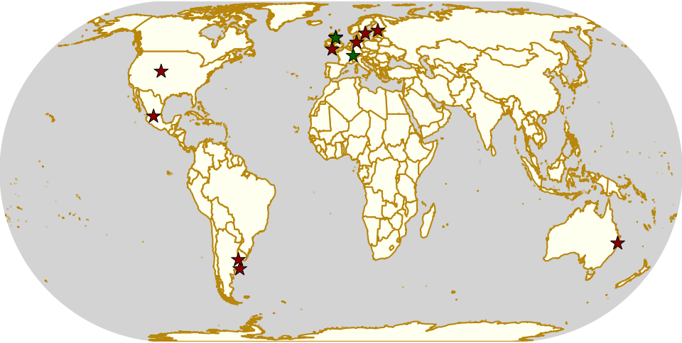
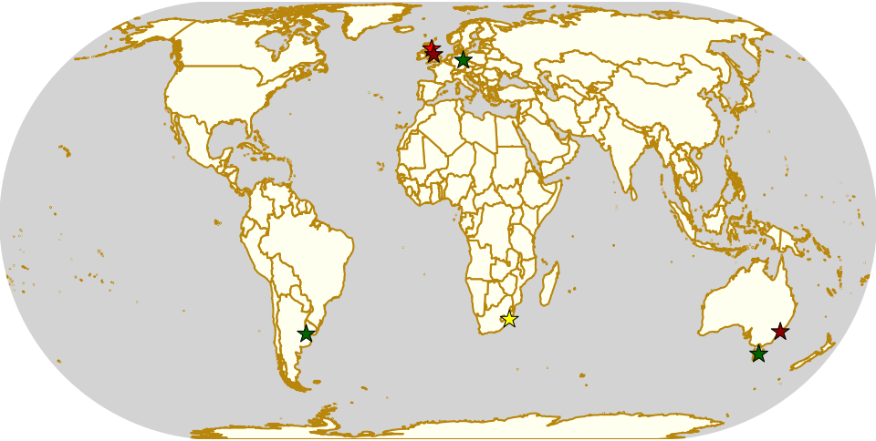
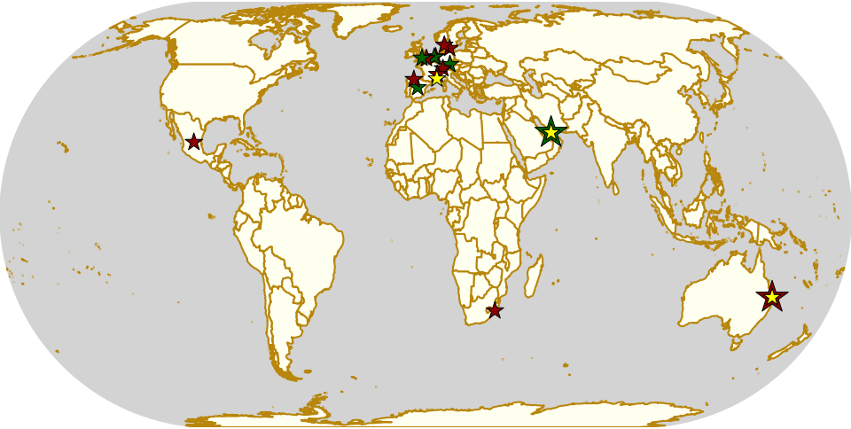
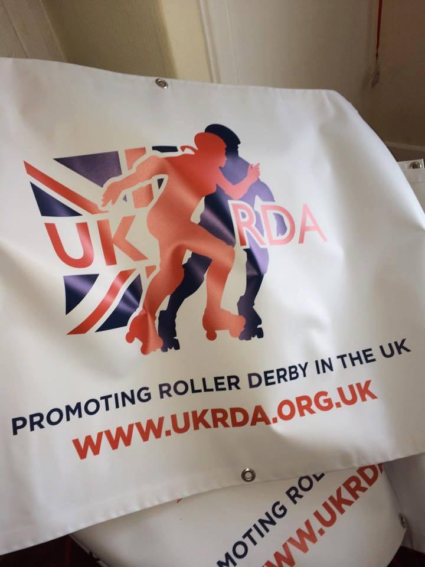

Weekend Highlights: 05 October 2019
This is an exciting week for Scottish Roller Derby, with both Edinburgh's Auld Reekie, and Glasgow Roller Derby competing in international tournaments (ARRD in the Continental Cup in Helsinki, and GRD in the Kick Ass Cup in Hamburg). And, to add to that, this is the weekend of the annual Big Blether Scottish Roller Derby Conference, so all the leagues will be coming together there.
There's also two-day international tournaments in Sweden, the Mexican National Division 2 Championships in Léon, Sudestada Roller Derby's debut bout in Necochea, and more!
The rules are, as usual: highlights limited to 1 event per country, with an "extra" event allowed for a different kind of fixture (so, 1 tournament and 1 bootcamp), or if they involve Scottish leagues (since we are the Scottish Roller Derby Blog). Other notability might also allow the extra event - great posters, notable teams, etc. (League birthdays may count as "special" enough, at our discretion ;) )
We've bent the rules a bit this time, because it's important to highlight derby in regions which need more attention, and because it's quiet enough that we have the space.
In a bid to make this list as useful as possible, we've avoided links to Facebook except where noted. (Links to Teams are to non-Facebook resources - Instagram, or actual team pages - we'd strongly recommend that Teams get themselves an actual webpage [we can help host one if you need help]).
Locations are roughly organised East-West (with things before the weekend out sequence at the start).
Fenix Roller Derby recap an exciting year for Patagonia.
Ahead of FENIX Roller Derby hosting the next big Patagonian event, a 2 day bootcamp coached by 2x4 Roller Derby's Tropical Mecánica, we asked them to recap the exciting history of the Patagonian community's past year.
Antes de que FENIX Roller Derby organizara el próximo gran evento patagónico, un campamento de entrenamiento de 2 días dirigido por Tropical Mecánica de 2x4 Roller Derby, les pedimos que recapitularan la emocionante historia de la comunidad patagónica el año pasado.
En general es importante destacar que el Derby patagónico ha crecido muchísimo estos años gracias al trabajo fuerte que ponemos cada equipo. Me refiero a estos tipos de eventos donde podemos compartir en casa entrenamiento con una destacada jugadora del Team OSOM [del 2x4], invitando a los equipos que puedan sumarse a participar también, así ellos y nosotros nos capacitamos para seguir creciendo. En la provincia de Santa Cruz hay 4 equipos que vivimos a 400 km de distancia entre nosotros, por lo tanto jugar seguido es muy difícil porque implica mucho gasto económico. El año de Derby patagónico empezó con un torneo en Ushuaia que tuvo un excelente nivel y por suerte fénix roller Derby de fusionó con erráticas de Calafate en un equipo llamado cruz del sur y pudimos participar. Después tuvimos un bootcamp en caleta olivia una ciudad ubicada a 600 o 700 km de nuestro río Gallegos, pudimos participar también, finalizando el encuentro con un partido mixto.
En cuanto a actividad de nosotros fueron los únicos eventos a los cuales pudimos asistir. Para el año que viene tenemos proyectados más viajes para participar a nivel nacional en torneos grandes.
In general, it is important to highlight that Patagonian Derby has grown a lot in recent years thanks to the hard work that we put in from every team. I mean, these types of events where we can share bootcamps at home with an outstanding player from [2x4's] Team OSOM, inviting the teams that can Join to participate as well, so they and we are trained to continue growing. In the province of Santa Cruz, there are 4 teams that live 400 km away between us, therefore playing often is very difficult because it involves a lot of economic expense.
This year of Patagonian Derby began with a tournament in Ushuaia that had an excellent level and, luckily, Phoenix Roller Derby merged with Calafate's Erráticas in a team called "Cruz del Sur" and we were able to participate. Then, we had a bootcamp in Caleta Olivia, a city located 600 or 700 km from our Rio Gallegos where we could also participate, ending the match with a mixed match.
As for our activity, they were the only events we could attend. For next year we have more trips planned to participate nationally in large tournaments.
Weekend Highlights: 29 September 2019 (Sunday)
This is the Sunday (and Monday) addendum for the coming weekend.
We've also switched to a better map projection (Eckert IV) for this edition, to more accurately represent the scale of the countries and continents of the world.
The rules are, as usual: highlights limited to 1 event per country, with an "extra" event allowed for a different kind of fixture (so, 1 tournament and 1 bootcamp), or if they involve Scottish leagues (since we are the Scottish Roller Derby Blog). Other notability might also allow the extra event - great posters, notable teams, etc. (League birthdays may count as "special" enough, at our discretion ;) )
We've bent the rules a bit this time, because it's important to highlight derby in regions which need more attention, and because it's quiet enough that we have the space.
In a bid to make this list as useful as possible, we've avoided links to Facebook except where noted. (Links to Teams are to non-Facebook resources - Instagram, or actual team pages - we'd strongly recommend that Teams get themselves an actual webpage [we can help host one if you need help]).
Locations are roughly organised East-West (with things before the weekend out sequence at the start).
Weekend Highlights: 28 September 2019
This is another really busy weekend, but weirdly less so in Latin America on Saturday [edit: this turned out to be just that the events were harder to find]. We have two 10th birthdays of leagues, several bootcamps and tournaments (including possibly our favourite one, the Hot Chilli Cup - providing both Junior derby bootcamp and tournament in Australia), and a bunch of exciting derby in Argentina. As there are so many deserving events, we'll be having an addendum to cover significant things in the Sunday-Monday period later in the week.
We've also switched to a better map projection (Eckert IV) for this edition, to more accurately represent the scale of the countries and continents of the world.
The rules are, as usual: highlights limited to 1 event per country, with an "extra" event allowed for a different kind of fixture (so, 1 tournament and 1 bootcamp), or if they involve Scottish leagues (since we are the Scottish Roller Derby Blog). Other notability might also allow the extra event - great posters, notable teams, etc. (League birthdays may count as "special" enough, at our discretion ;) )
We've bent the rules a bit this time, because it's important to highlight derby in regions which need more attention, and because it's quiet enough that we have the space.
In a bid to make this list as useful as possible, we've avoided links to Facebook except where noted. (Links to Teams are to non-Facebook resources - Instagram, or actual team pages - we'd strongly recommend that Teams get themselves an actual webpage [we can help host one if you need help]).
Locations are roughly organised East-West (with things before the weekend out sequence at the start).
UKRDA needs you
It's time for another guest post, as the UK's National Governing Body for Roller Derby, the UKRDA, have a message.
Roller Derby has changed a lot since the revival in 2001; with age, and with the changing of the wider cultures in which it’s embedded, it's grown, shrunk, formalised, organised, reorganised, liberated and moderated in various ways in various places. We’ve gone from being some friends who skate together and have fun to being a sport with World Cups and World Championships, leagues on six continents and a growing Junior reach (all whilst still having fun).
The UKRDA, like all of the Roller Derby “National Governing Bodies” has been part of that journey, but the role of National Governing Bodies hasn’t always been clear in our new and rapidly evolving sport.
Back in 2007, the group that would become UKRDA was nothing more than a Yahoo groups discussion board (some readers may not even remember that Yahoo ran such a service!); a place for the fifteen active leagues to coordinate, share advice, and work together to see how this Roller Derby thing could happen. Two years later, it had gone formal: naming itself the “United Kingdom Roller Derby Association”, to provide a democratic body that could represent the sport to all those structures that need an “organisation” to talk to. Slowly, as Roller Derby in the UK has grown, the UKRDA has evolved, taking on more responsibilities. (To name a few: overseeing National Teams for the World Cups; supporting the development of British Championships; negotiating in a position of collective strength for insurance for leagues; managing grievances and complaints; upholding codes of conduct; standing up for leagues when they need support; supporting officials in development and training; and representing the sport to National and International media.)
In the past month, it has taken another step, joining the German and Finnish NGBs in formalising a deeper relationship with the WFTDA. This collaboration may look like a simple letter, but the significance is so much more. In the face of other organisations, such as World Skate, who want to be seen as the leaders of roller derby, we say no. We acknowledge that this sport, our sport, is run by those that make it; the officials, the volunteers and the skaters. For this to continue to be the case, we have to put these procedures and agreements in place. These are important foundations, we're building a platform of NGBs working together with our global governing bodies - it's giving NGBs a clear voice in the future of our sport.
Despite these significant changes and developments, the UKRDA continues to be a small team of volunteers. These volunteers are elected by member leagues and are governed by votes of those leagues. At times the UKRDA has been perceived as a "faceless bureaucracy", but in its simplest form, it is a group of volunteers who care deeply about the progression and development of Roller Derby. Our names are available on our website, we're real people who skate, volunteer and officiate at leagues across the UK. However, in the past year, online abuse and pressure have made the job even harder for this band of volunteers. We’ve heard more from people sending us abuse, than those wanting to get involved.
It’s a crucial time for UK roller derby. The last 6 months, (or even 7 days!) have proved the value of clear, agreed on policies available for leagues as well as the importance of grievance and escalation processes. But we can’t do this alone.
We have big plans. But we need more people to come on board to see these plans through. One of the priority projects for the UKRDA is to seek recognition from the Sports Councils across the UK as an NGB in our right - we can tap into structures, advice, support and potentially funding. We also need to review our grievance process to help ensure safe spaces. We want to foster the development and learning of officials through boot camps. We want to develop a UK wide safeguarding policy for roller derby that leagues can implement.
We need you to get involved.
There is only so much a few people can do. You have the expertise of your sport, your leagues, your local areas. We need you to help us make all of these structures better, to support our sport and the people within it as well as we should. We're here being open and honest; the culture and actions towards URKDA need to change, and we need to change - this is where we need you.
Nominations for people to join the board of the UKRDA are open now. Without you, this won’t happen. We are only as strong as our member leagues and our volunteers.
We have an Extraordinary General Meeting on October 3rd - if your league is a member we want you to be there. All of us make up the UKRDA, but more of us need to get involved.
The UK roller derby scene is amazing. We are writing this while at British Championships playoffs, at the end of the first day when we have seen the level of commitment and skill from leagues that ten years ago would have been visible at a WFTDA D1 team. The athleticism, the energy, the passion is there. We're so proud to be a part of this incredible sport, and we hope this has given you an insight into our commitment to its development, and that we have heard what our members want. This is a step towards achieving that.
The UKRDA Website is: https://ukrda.org.uk
If you are interested in being part of the UKRDA Board, please send a statement of interest to directors.ukrda@gmail.com, covering what skills, experience or enthusiasm you would bring to the UKRDA - as well as your name and league affiliation (if any) by midnight on Wed 25th Sept. You do not have to be a member of a league to apply.
Any and all questions can be addressed to UKRDA via the above email, or via messages on any of their social media accounts. [ FACEBOOK ][ INSTAGRAM ][ TWITTER ]
Udine's Banshees show their love for derby in three languages!
We are happy to host this guest post from the Banshees of Roller Derby Udine . In the spirit of their project, this post is available in English, Italian and Friulan [click the language button at the left to pick a language]

Hi everybody!
I'm Sugar Molotov from Banshees - Roller Derby Udine. We are a very small team in the rearmost region in north-east Italy and we are struggling to form a complete roster as many of us did or are still doing right now all around the world. We have all experienced the "roller what...?" reaction from people, and one day I thought: why is it so difficult to explain what's so exciting in this sport? How can I let them see and feel what I saw in Roller Derby and I'm feeling to this day?
So we decided to create a personal space on our social accounts (Facebook and Instagram) for every skater, ref, nso, or supporter to tell what they love about Derby and why they choose to play this amazing, thrilling and yet expensive and possibly dangerous sport, every day. We are all kind of very different people and still this brings us together in an unprecedented way, at least in my experience. This is how the #whyIchooserollerderby campaign was born - of course we do not have as many followers as other, bigger teams would have, but we wanted to try it anyway!
Also, space is a very important concept in Roller Derby so we put no limit: I asked my teammates to join this project, choosing a photo and writing whatever they wanted about it. I wanted them to feel at ease to share what they felt comfortable to. On the way I thought that it would be nice to have other people joining it as well, and here I am asking if you'd feel like joining us. We don't have much to offer in return, except that we'll treasure every single contribution as if it was our own. Every text is translated in three languages, Italian as it's our nationality, English because we want as many people as possible to read it and Friulano, which is the language spoken in this specific, small region of Italy and we want to take part in the effort to preserve it. It's part of our identity as well. Also, one of our teammate translated hers in spanish since it's her legacy, and we loved that immensely.
So! I hope I've given you a reason to join our small project in the hope to make it count in spreading the news there's a new world here, and it's like anything else.
Here are the addresses of our pages, the campaign has just started of course, but you can see how it looks:
https://www.facebook.com/bansheesrollerderby/ https://www.instagram.com/bansheesrollerderby/
Thanks for sparing some time for us,
Sugar Molotov
Banshees Roller Derby Udine

Note: I wrote this letter when the campaign had barely started. It grew slowly but steadily and I really want to thank all the people who made an effort to keep it going: Enrico Comar and Mara Devincenti translated in friulano a few texts, but the majority were made by Enrico Gigante, whom we can’t thank enough. He’s always on the spot and faster than light! Thanks to ARLeF, the regional agency for friulano language and Francesca Battistutta from the regional counter for friulano language for the revisions. She also helped us a lot with this article and she’s invaluable to me for her cheerful self and fierce friulano soul. All the graphics are made by Giulia Malaridotti (Woozy McWolf), our insomniac doggo-lover who send me edited pics at 3am in the morning so that I can publish them in time. English texts were reviewed by Chealsey Lynch (Marma Juke), our US blocker who’ll always be a Banshees in our hearts - we’ll miss you dearly. Special mention to my crazy fellow SMMs: Alessandra Menardi (Jackass Menny), Sveva Angelini (Freaky Pinball) and Alessandra Piermattei (Alycat), who believed in this project even when I didn’t and always had my back when I couldn’t keep up with the virtual world. Grrlz, you are simply the best. I could have never made this come true without you. Last but not least, the whole Banshees team who indulged in my whim and all the other fellow skaters and officials who took part in the project, sending us the most emotional, personal bits of their derby story. Thank you.
#rollerderby #whyIchooserollerderby #quadskates #derbylife #rollerskating #rollerskate #roller #skate #derby #rollerskates #skating #flattrackrollerderby #derbylove #derbygirls #derbyguys #derbyfamily #supportyourlocalteam #bansheesudine #bansheetudine #friuliveneziagiulia #fvg #jointhebanshees #friulano #lenghefurlane #ARLeF #scottishrollerderby